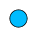
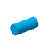

Creating visualizations manually
The following lists a series of samples that demonstrate how to programmatically alter the visualization of features in a FeatureLayer or a StreamLayer. The visualization of a GraphicsLayer is determined by the symbol of its individual graphics; GraphicsLayer does not have a renderer.
Overview of visualization samples
Location
Sometimes users only want to know where features are located. The following samples demonstrate different ways to accomplish this.
Visualize all features with the same symbol
This sample shows you how to assign the same symbol to all features in a layer. This is the most basic visualization scenario and is not driven by attribute data. This is useful when adding layers purely for contextual reasons, such as showing political boundaries, roads, points of interest, project areas, etc.

Scale feature sizes based on real world sizes (2D)
Perhaps you want to add a little more information to features besides their simple location. This sample shows how to use visual variables to create point symbols scaled to the real-world size of tree canopies (point features) in a 2D MapView.
Visualize features with realistic 3D symbols
You can take the previous sample a step further and create 3D symbols in a SceneView that resemble the look of features as they exist in the real world. Once again, visual variables are used to reference numeric attribute fields containing various measurements and dimensions of tree features stored as points. The renderer uses visual variables to proportion different parts of each symbol to recreate a simple 3D representation of the tree as it might look in the real world.
Visualize data with rotation
This sample demonstrates how to visualize point data using rotation. Each point in the sample contains an attribute for the aspect (or compass direction the terrain faces) of the terrain and rotates the arrow symbol appropriately.
Another application of rotation would be to visualize city bus features loaded from a StreamLayer with arrow symbols rotated based on the heading of each bus.
Point visualization in 3D
This sample shows the features that help solve these problems: relative-to-scene, callout, verticalOffset, decluttering and screenSizePerspectiveEnabled.
Heatmap
This sample demonstrates how to create a heatmap for large, dense point layers.

Scale-dependent visualizations
This sample shows how to update a layer's visualization based on the view's scale.

Types
The following samples demonstrate visualizations by unique types. Type is usually based on a string attribute field and visualized with color.
Visualize features by type
This sample visualizes features from the same layer differently based on the value of a string field. Visualizing features by type is useful for data that has a well-known classification, such as road type (e.g. residential, arterial, highway, freeway, etc.), or predominant value (e.g. dominant crop, minority, language, etc.).
Extrude building footprints based on real world heights
This sample demonstrates how to visualize polygon features by type in a 3D SceneView while extruding each feature by a numeric field. In this case, we want to see the building locations classified by type (residential, commercial, hotel, condo, etc.). While this could easily be done with simple fill symbols, we added the data to a SceneView and extruded each building by its height to provide more context to the location of each building.
Thematic counts and amounts
The following samples demonstrate how to visualize thematic numeric data such as population counts, wind speeds, percentages, etc.
Visualize data with class breaks
When well-defined class breaks are already known for a variable, then defining separate symbols for each break may be appropriate.
Data-driven continuous color
When data breaks aren't clear or are difficult to determine, continuous color can be a good way to visualize a numeric attribute along a ramp of two or more colors. Applying continuous color ramps can also reveal more detail about the distribution of the data, particularly in polygon features.
Data-driven continuous size
This sample demonstrates how to visualize numeric attribute data with continuous size and 2D symbols. This sample references polygon features (U.S. counties) that contain select demographic data. Polygons may be assigned marker symbols to visualize data with continuous size.
Data-driven extrusion
Like the previous example, this sample demonstrates how to visualize numeric data with continuous size. However, this visualization uses extrusion in a 3D SceneView to tell the demographic story. Extrusion only applies to features with polygon geometry; however, this same principle may be applied to features using ObjectSymbol3DLayers
Data-driven opacity
Opacity can be used to diminish or enhance the importance of some features. This sample shows a layer depicting the highest level of educational attainment by census block group. Opacity is added to the renderer and applied to features based on the value of a numeric field - the total population living in the block group. This tones down features with low population and draws attention to features with a higher population.
Data-driven visualization with Arcade
This sample demonstrates how to create a data-driven visualization of unique values with an Arcade expression. Arcade is useful for creating visualizations in a FeatureLayer based on a value generated from an expression instead of a single field value.
Thematic multivariate visualization (2D)
Visual variables allow developers to programmatically create bivariate or multivariate visualizations with just a few lines of code. Visualizing multiple variables can reveal spatial trends among two or more variables. This sample demonstrates how to combine size and color to observe the potential relationship between two numeric fields.
Thematic multivariate visualization (3D)
Like the previous example, this sample demonstrates how to create multivariate visualizations with two numeric fields using color and size visual variables. However, 3D volumetric symbols are applied to the data to create a more stunning visualization.
Renderers overview
The visualization of a FeatureLayer is determined by its renderer. The following types of renderers may be applied to a FeatureLayer:
Each renderer (except HeatmapRenderer) has a visualVariables property which allows developers to define simple data-driven visualizations based on numeric attributes with color, size, opacity, rotation, or any combination of two or more variables. Any renderer and visual variable may be applied to layers of any geometry type in both 2D MapViews and 3D SceneViews. Read the documentation for Renderer for more detailed information about how to apply renderers to a FeatureLayer.
Symbols overview
Symbols define the visualization of individual features and are used by renderers when determining how a layer is drawn in the view. There are two types of symbols: 2D symbols and 3D symbols. Check out the Symbol Playground to learn about constructing symbols in a hands-on environment.
2D symbols
The 2D symbols listed in the table below may be used to visualize features in either 2D MapViews or 3D SceneViews. It is recommended, however, that they only be used for layers added in MapViews. The symbol contains properties such as color, size, and outline (depending on the symbol type) that defines the visualization of features in a layer. The color and size properties may be altered using visualVariables on the renderer.
| Symbol | Geometry |
|---|---|
| SimpleMarkerSymbol | Point, Polygon |
| PictureMarkerSymbol | Point, Polygon |
| SimpleLineSymbol | Polyline |
| SimpleFillSymbol | Polygon |
| PictureFillSymbol | Polygon |
| TextSymbol | Point, Polyline, Polygon |
Read the documentation for Symbol and its subclasses for more details.
3D Symbols
The 3D symbols listed in the table below may only be used to visualize features in 3D SceneViews. Unlike 2D symbols, 3D symbols are containers for symbol layers. One or more symbol layers determines the visualization of a 3D symbol. A 3D symbol must have at least one symbol layer for features to render in the view. While more than one symbol layer may be used to define a 3D symbol, only one symbol layer is supported when applying visualVariables to the renderer. The table below lists each symbol layer along with the symbol types and geometries to which each may be applied.
| Symbol Layer | Symbol | Geometry | Description | Size | Example |
|---|---|---|---|---|---|
| IconSymbol3DLayer | PointSymbol3D, PolygonSymbol3D | Point, Polygon | flat | points/pixels |  |
| ObjectSymbol3DLayer | PointSymbol3D, PolygonSymbol3D | Point, Polygon | volumetric | meters | |
| LineSymbol3DLayer | LineSymbol3D, PolygonSymbol3D | Polyline, Polygon | flat | points/pixels | |
| PathSymbol3DLayer | LineSymbol3D | Polyline | volumetric | meters |  |
| FillSymbol3DLayer | PolygonSymbol3D, MeshSymbol3D | Polygon, Mesh | flat | - | |
| ExtrudeSymbol3DLayer | PolygonSymbol3D | Polygon | volumetric | meters | |
| TextSymbol3DLayer | LabelSymbol3D | Point, Polyline, Polygon | flat | points/pixels |
See the documentation for Symbol3DLayer and Symbol3D for more details about the relationship of symbol layers to symbols.